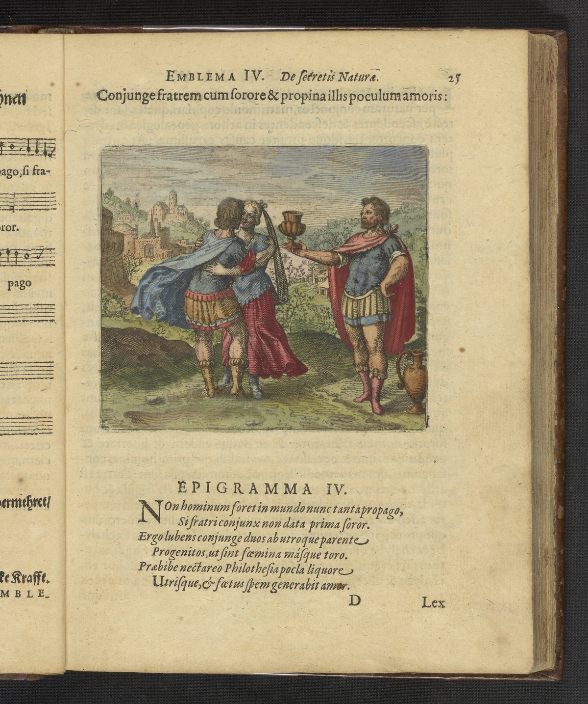

Original Source

: "Oedipus,
havingconquered the Sphinx andhaving killedhisfat her Laius, married his mot her".
Asunion betweenfat her anddaughter—to which Maier also alludesin embl. IV, discourse, paragraph 3,
speakingabout Lotin embl. XLI (
Epigram
, Istline): “From her own fat her, Myrrha re-ceivedthebeautiful
Adonis".
Asa marriageof mot her and sonorbrot her andsister inembl. XLIV, withthemotto: “Typhon kills Osirisby
aruse, andafter tha the scatters hislimbsfar and wide, but the famous Isiscollects them”and the epigram,
3rd line:"Isis isthesister, wife andmotherof Osiris”.
Totheseemblems Maier’s words from the discourse ofembl. Iv(Ist paragraph) areapplicable, where he
speaksabouta marriagebetween motherandson, fat her and daughter, brot her andsister.
Asa reason for their marriagehementions (andparagraph) theunionof like withlike. Thisisinspired by the
statementof the Greek alchemist Democritus:"Natureenjoys nature”,*5; rpfiarc; 1-?) qnlcrer 'rép7te*rw.,1a
recurring themeinalchemical literature. Offspringareexclusively tobeexpected froma.unionof thelike
with thelike, which areof one essence, butof twosexes. Thusachickencomesfroma cockanda hen, and
t his ruleappliesto theanimal, vegetable andmineral fields(discourse,3rd paragraph).
Brot her and sisterarethepersonifications of the contrast between the elements, asappears from Maier’s
words(discourse, andparagraph):"Thebrot her isburning hot, dry andcholeric, thesister iscold, moist and
phlegmatic". Theirproperties aretheproperties of the contradictoryelements, fire and water; fireis hot and
dry,
1M. Berthelot, Coll. des Am./lick. Gr., II,43-60.
EMBLEM W
Wateriscold.and moist. The temperaments correspond with theelements; the cholericman isclassified
under theelementof fire, thephlegmatic oneunder the elementof water."Brot her and sister are one in
essence and birth", thatistosay, theelements havearisen fromoneprimary matter. “Insex theyaretwo",
that istosaytheproperties of the elements groupthemselvesina. pairofcontrasts. Thisalchemical theoryis
based onthetheoryof elements of Empedoclesof Akragas, who considered the attractingandrepelling
forces, anteml veiixog, love and hatebetween the elements, as thestrength whichforms the Universe.
So brot her andsiste
Discourse Summary
All thephilosophersagree that theirworkis nothingbutmen’s and women’swork; for itis manly tobeget
and toruleover thewoman; and itis womanlytoconceive andtobepregnant, tobring forth, tofeed, andto
submitto theman. Atfirstshe feeds her child with herblood, after that with her milk and, whenit gets
bigger, with moresolidfood. It seemshorrible whenthephilosophers say thata womanshouldfeeda toad; it
isa poisonous, hostile animal. Throughnursing the toad, the womandies and the toadbecomesbig. The
woman diesin thesameway as Cleopatra did:because the toadpoison gets into her veins. In the Turbo,
Theophilus men-tionsa woman, who isunited witha dragon(embl. L). Thewordsof thephilosophers about
nursinga toadsoundcruel, but thepoisonous
‘ Ditto, like note3, andp. 292-294.
76EMBLEMv
animal isthesonof thewoman, andtherefore, ofcourse, it must befed byhermilk. But how didshecome
bysucha son?
In hiscommentaries Guilielmus Novobrigensis, an English author, wrote—-may othersjudge howreliablehe
is-——that, ina quarryin thebishopric of Vinton, alargest one wascleft, inwhichaliving toad withagold
chain wasfound. Attheorderof thebishop, how-ever, hewaslocked ineternal darknessagain, becauseit
was feared that t his was abadomen.
In thesameway, thistoadis distinguishedby its gold; notartificially, on the outside, itis true, withagold
chain, butattheinsidein a naturalway, like thestones Borax, Chelonite, Betrachite andothers. This toad,
seen asast one, however, far surpassesthesesaid stonesin its acti...
Scholarly Commentary
H.M.E. de Jong HIGH
Brother (hot, dry, choleric) = Fire. Sister (cold, moist, phlegmatic) = Water. Union of contrasts per Empedocles. Related to Emblems XXXIX (Oedipus/mother), XLI (Myrrha/father), XLIV (Osiris/Isis).
Citation: Emblem IV section
Maier's Sources
Pseudo-Aristotle, Tractatulus de Practica Lapidis (MOTTO_SOURCE)